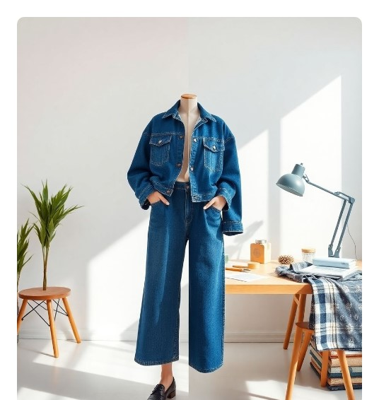

Transforming Textile Waste into Fashion Treasures
EcoStitch empowers designers and enthusiasts to give new life to discarded fabrics, fostering creativity and sustainability one stitch at a time. Join our community committed to a greener future.

Explore Fabric Categories


Our Commitment to a Sustainable Future
At EcoStitch, we believe in the power of conscious consumption and creative reuse. Our platform is dedicated to reducing textile waste, inspiring innovative fashion design, and championing environmental stewardship.
🎁 Bonus Feature: Fabric Recognition Demo
Try our AI-powered tool to instantly identify fabrics — a fun way to explore sustainable fashion!
Try the Demo